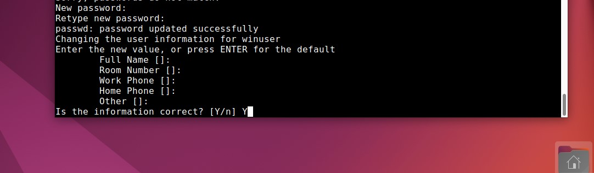

Todo este trámite se va a realizar en la máquina virtual de Ubuntu, la cual instalamos en los pasos previos
Para empezar, una vez iniciada la máquina, accedemos al usuario root utilizando el comando "su" y introducir la contraseña
Una vez en root, utilizamos los siguientes comandos para actualizar el sistema
Procedemos a Instalar Samba (apt install samba)
Añadimos otro usuario (adduser winuser)
Ignoramos los datos en este caso y le damos a Enter en todo
Cerramos sesión y entramos en la cuenta "winuser" usando la contraseña que le hemos asignado
Le damos a winuser permisos de administrador usando su y accedemos a la carpeta personal (cd .. si no estamos allí) (cd winuser)
ahora creamos una carpeta llamada "compartida" (mkdir compartida)
le damos permisos a la nueva carpeta "compartida" (chmod 777 compartida/)
Instalamos VIM (apt-get install vim)
Usamos nano para cambiar el archivo de configuración de Samba
Usamos nano para cambiar el archivo de configuración de Samba (usamos ctrl + x para guarday y aceptamos, luego, Enter)